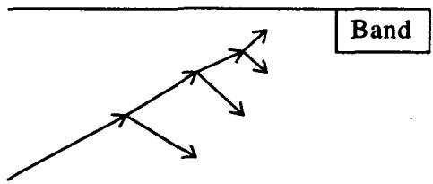

第13章：期权市场的一些褶皱（Some Wrinkles of Option Markets）
Sell [volatility] on Thursday and buy on Friday. —— 一句关于周末前卖波动率的老期权谚语
导读：本章要解决的问题
这一章很短，标题里的 wrinkles（褶皱）也很诚实：它收拾的是定价理论默认抹平、而真实市场里会硌脚的几处微观结构问题。前面所有章节都建立在"连续交易、无摩擦、信息及时、价格是一个干净的随机过程"这套假设上。本章要讲的，恰恰是这套假设在到期日、在大额未平仓集中、在央行设定的货币区间、在"flat"这个词本身上的失效。
把全章压缩成四条主线：
- 到期钉住风险（pin risk）来自信息时滞，而非价格波动。 期权收盘到行权指派通知之间有一段时间差，标的又会在这段时间里继续吸收信息，于是 conversion/reversal 这种"教科书完美对冲"会在平值附近裂开一个无人补偿的或有敞口。put-call parity 在非现金结算的上市期权上失效。
- 粘性行权价（sticky strike）是对冲行为反作用于标的路径的结果。 当 long gamma 的动态对冲者集中在某个 strike，他们在 strike 下买、strike 上卖，把标的"粘"在 strike 上；当 short gamma 集中，标的反而被甩开。谁 long 这个 strike，决定了它是粘还是甩。
- 市场壁垒（market barrier）往往是光学幻觉。 货币区间能钉住现货，却钉不住远期；欧式期权按远期定价，会像热刀切黄油一样穿过壁垒。除非利率本身也被设区间，否则货币区间对欧式期权不构成真壁垒。
- "flat"是一个相对于某个偏导数才有意义的词。 delta flat 不等于 gamma flat 或 vega flat；路径依赖和障碍期权几乎从不长时间 flat，二元期权永远不 flat。
这四条都指向同一个母题：模型风险常常不在公式里，而在你用公式时悄悄假设了一个并不存在的市场微观结构。 笔记沿原文的 PIN RISK → STICKY STRIKES → MARKET BARRIERS → WHAT FLAT MEANS 顺序展开，并在每处把交易员的经验法则接回它对应的理论命题。
一、到期钉住风险：信息时滞制造的或有敞口
Taleb 给到期钉住风险（expiration pin risk）下的定义是：它是一个期权头寸的到期方差，源于关于"行权指派抽签"结果的信息不及时。
机理要拆清楚。期权市场收盘，到通知空头方"你是否被指派"之间，存在一段时滞，这个时滞出于清算处理的需要而存在。当期权离平值太近时，结果就高度不确定。钉住（pin）延长了这种不确定性，从而延长了期权的有效寿命，有时还会凭空造出一个无人为之付费的或有权益。由此 Taleb 给出本章第一条风险管理规则：
对非现金结算的上市期权（无论欧式还是美式），put-call parity 都不成立。
这条规则把第 1 章里那个"同 strike、同到期下 "的干净代数，在到期日这个奇点上撕开了。指派通知至少要在结果揭晓前 24 小时发出，于是当操作者卷入一个 conversion（转换）或 reversal（反转）时，pin risk 会变得相当可观。
conversion 在平值收盘时为何会裂开
Taleb 的例子非常具体。某上市交易所的市场正好收在 100。交易员 short 100 calls、long 100 puts、long 标的期货，这正是教科书所谓的"完美对冲"（conversion）。问题来了：他不知道该不该行权。如果他把所有 put 都行权、交出期货，他会希望 call 全部被放弃；如果他放弃 put，他会希望 call 全部被行权，好让他交出期货。而对手方陷入完全相同的两难。
更麻烦的是，期货的收盘价并不真正指示行权时刻市场会在哪里。期货收盘通常不终结期权：中间隔着几个小时，信息仍可能砸进市场，操作者只能猜测其大致影响而无法精确。Taleb 把场景推进一步：假设期货收在 101，但收盘后政府丑闻的消息传出。操作者会纠结那些名义上虚值的 100 put 怎么办。他相当确定，如果此刻市场开着，价格会更低。他的风险是两面的：一面，他放弃了 put、call 又没被指派，而开盘市场明显走低，他裸着多头挨打；另一面，他行权了 put、call 却仍被指派，而消息在截止时间后被辟谣、市场原地不动，他白白动了仓。更阴暗的是，某些握有大额未平仓的对手方能操纵市场、把不确定性转向对自己有利的方向，比如他们手握一张大卖单，于是决定去行权那些"名义上虚值"的期权。
交易所提供过一些缓解 pin risk 的方案，没有一个令人满意。其中之一是：在能找到一个持有完全相反两侧头寸的对手方时，允许 conversion-reversal 互相轧差。
只有当标的是一个与期权同时到期的现金结算期货时，conversion 或 reversal 才是纯套利。例子：Eurodollars、Euromarks、Pibor（季度期权）、SP500（季度）。
理论映射：pin risk 是最优停时遇上不完全信息
把 pin risk 翻译成我们熟悉的语言，它是两个理论缺陷的叠加。其一，行权"是/否"是一个二元决策，到期支付在 strike 处不连续，标的恰好落在 strike 时，期权的 delta 在 0 和 1（或 -1 和 0）之间不收敛，这正是 digital/二元支付在临界点上 delta 发散的现象。其二，标准最优停时理论假设决策者在行权时刻拥有当下的状态信息 ；而 pin risk 的本质是决策时点与信息时点错位：你必须在掌握"行权时刻真实价格"之前就提交行权指令。于是这不再是 的干净停时问题，而是一个信息集 滞后于真实状态的决策问题，残余的不确定性无法被对冲掉，也没有人为它付权利金。conversion 之所以"完美"只在连续、信息及时的世界里成立；一旦到期日把时间离散化、把信息延迟，parity 这条静态复制等式就断了。
Taleb 末尾还给了一个术语警告，值得记下来避免日后混淆：
交易员像诗人一样，常给两个不同的东西起同一个名字。"pin risk"也被用来指含障碍期权的组合在障碍处的 P/L 摆动。
本节讲的是到期日指派的 pin risk；障碍处的 pin risk 是另一回事（见障碍期权各章）。
二、粘性行权价：对冲行为反作用于标的路径
粘性行权价（sticky strike）指的是这样一种场内或场外行权价：当某个 strike 上积累起巨大的未平仓量时，临近到期它会改变标的在该价位附近的行为。Taleb 强调，sticky strike 通常被一个条件放大：多头或空头的未平仓集中在一个或少数几个不做 delta 对冲的参与方手里。对标的的压力之所以出现，是因为期权交易员的行为会偏离客户的行为。
谁 long 这个 strike，决定它粘还是甩
机理是这样的。假设一个大的备兑卖方（covered writer）short 了 SP100 的 450 call。接下这些 call 的期权交易员因此 long gamma，他们会倾向于在 strike 附近买进卖出（gamma scalping），结果在自己最不愿看到的那个价位附近制造出一种稳定性：strike 下方有买盘，strike 上方有卖盘。与此同时，持有最大份额空头的那一方对市场漠不关心，他只在乎期权终态是实值还是虚值。
正是"集中在一个不做 delta 对冲者手里"造成了粘性。临近到期，本地做市商（locals）需要在 strike 下方买入他们全部的 delta、在 strike 上方卖出全部的 delta，于是标的倾向于粘在 strike 附近，直到新的供给或需求把它推开。如果同样的未平仓量分散在众多做市商手里，粘性会大大减弱，因为 long gamma 与 short gamma 会两边挂单、互相抵消。
Taleb 进一步指出：当这样一个 strike 在到期日被触及（而 strike 被穿越的几率很高），它会像一个**吸收态（absorbing state）**那样运作：从下方逼近时，上方有大卖家；从上方逼近时，下方有大买家。随着越来越多客户用衍生品替代基础证券，这种"期权未平仓决定标的路径"的条件正在浮现。权证（warrant）交易员受这种效应影响最深，因为那里二级 delta 对冲者占全部交易者的比例最高。
Taleb 顺手记了一句现货交易员的抱怨：这常常是"尾巴摇狗"（the tail wagging the dog），而关于到期对现货行为影响的研究做得很少。在货币期权市场，每日到期会影响现货行为，有一句话说：卖一个便宜的隔夜期权、或买一个昂贵的隔夜期权，总有得赚。当隔夜期权便宜时，被吸进来的交易员会稳定市场，纽约时间上午 10:00 若现货在 strike 附近，市场会向 strike 收敛；反过来，当期权昂贵时，市场会被甩来甩去（whip）。由此得到本节的规则：
当动态对冲者 long 一个 strike（因而静态对冲者 short 它）时，这个 strike 会发粘（sticky）；否则它会被甩开（whip）。
理论映射：内生的 pinning 与 BSM 外生性假设的破裂
这一节直接戳穿 Black-Scholes-Merton 的一条核心假设：标的过程外生于期权市场，对冲者是价格的接受者，他的再平衡不影响标的。sticky strike 说明在大额、集中、单向持有的现实里，这条假设失效，对冲流（hedging flow）反馈进了标的的漂移与局部波动。
机理可以用 long gamma 对冲者的再平衡方向来理解。一个 long gamma 的动态对冲者，标的涨就卖、跌就买，他的成交是逆势的（mean-reverting flow），把标的往 strike 拉，压低了 strike 附近的已实现波动率，这就是 pinning。一个 short gamma 的对冲者方向相反，涨追买、跌追卖，是顺势的（trend-amplifying flow），把标的推离 strike，放大波动，这就是 whip。所以"谁 long 这个 strike"等价于问"strike 附近净的 gamma 对冲流是逆势还是顺势"。
把它写得再形式化一点：若市场中在 strike 附近的净 gamma 暴露为 ，对冲流对标的瞬时方差的反馈大致与 同号。dealer 整体 long gamma（）时方差被压低、价格被钉住；dealer 整体 short gamma 时方差被放大、价格被排斥。这正是后来"gamma exposure / pinning"实证文献的交易直觉版，而 Taleb 在这里用纯交易语言把因果讲清楚了：粘性不是标的的内在性质，是未平仓结构与对冲约束共同生成的。
三、市场壁垒：制度约束造成的粘性
市场壁垒（market barrier）是一个由于制度约束而被认为会造成某种粘性的价位。Taleb 一开始就提醒：市场壁垒不要和障碍期权（barrier options）混为一谈。市场壁垒的例子有：
- 货币区间（currency band），央行通过干预阻止市场穿越某个价位。
- 政府担保的农产品价格地板（floor）。
交易所在价格触及某水平时强制停市的市场限制（market limits），是一种更弱形式的市场壁垒。
货币区间是壁垒吗：橡皮树与异方差
有些经济学家认为，市场壁垒应当在其附近抑制波动率。文献里"目标区（target zone）是异方差的"这个论断后来被证明是对的，但方向恰好相反。

图 13.1 画出"橡皮树"随市场逼近壁垒而收缩。直觉很简单：一个距上限只有 20 个点的市场，向上不可能走超过 20 个点。为了补偿这一点（假设 skew 不变），它向下也应被限制在 20 个点，依此类推。于是波动率随逼近壁垒而下降，资产开始在壁垒附近"贴住"（pasting）。一个更复杂的分析会增大 skew：市场向下可以跌超过 20 美分，但附加给它的概率应当很低，以满足下面这个"公平"博弈（为简化假设利率可忽略）：
其中 是市场上涨的概率， 是上涨幅度， 是下跌概率， 是下跌幅度。这只是鞅条件（期望漂移为零）的离散表述：上行的概率加权幅度等于下行的概率加权幅度。
但交易员不买这个账。Taleb 的判断是：逼近区间时，远期的波动率应当急剧上升。每次市场逼近这样一个区间，投机者与央行之间就爆发一场战争；而且由于物理学家称为滞后（hysteresis）的现象，市场往往会带着报复性的力量猛地穿透壁垒。这与"波动率被抑制"的学院派结论正好相反，也是这一节标题打问号的原因。
缺席的壁垒：现货被钉住，远期照常交易
从业者付出高昂代价才发现：分析货币区间时被当作边界设进模型的那些反射/吸收壁垒（reflecting/absorbing barriers），原来是光学幻觉。在欧洲汇率机制（ERM）崩塌之前，关于这个题目有大量文献。
关键洞察是：当一个货币在现货上触及区间，而现货是交易中唯一可观测的部分，远期却继续不受约束地交易。看起来像极端的利率波动，其实只是货币的波动被翻译成了利率的语言。
Taleb 强调"现货未必是屏幕上看到的那个东西"。一周后交割的现货，是即期现货加上远期"点"（forward points），而远期点本身是利差的函数。交易员先买卖现货、再买卖远期点，并不存在一个真正的非合成的直接远期市场。计算方法是：
其中 是现货， 是远期， 与 是两个货币的利率， 是期限。如果把 冻结住， 仍会继续交易；为了让 保持不变， 必须调整，而通常是该货币的利率（这里的 ）承受调整的主要冲击。这就解释了为什么"现货被钉住"时利率看起来剧烈波动：它只是远期波动率经由这个恒等式投影到了利差上。1992 年危机里爱尔兰 punt 隔夜利率冲到 4000%（第 12 章提过），正是这个机制的极端表现。
对期权头寸的影响是决定性的：一个欧式期权，或任何非现金交割的期权，按远期定价，完全不关心现货。Taleb 提醒，99% 的香草货币期权是欧式的。这样一个期权会"像热刀切温热的黄油一样"穿过壁垒，它的价格会向最终的 调整。给这类工具定价时，因此必须把壁垒这个概念彻底剔除。由此得到本节的规则：
一个货币区间，即便被完全执行，对欧式期权也不构成无瑕的壁垒，除非货币对中两个元素的利率也同样被设了区间。
理论映射：壁垒设错了状态变量
这一节的理论身份很清晰：障碍期权定价里设吸收/反射壁垒，必须设在期权真正依赖的那个标的过程上。欧式货币期权的支付依赖到期日远期 （等价地，依赖到期日交割汇率），而不依赖路径中的现货 。央行把现货钉在区间内，约束的是 这个状态变量；但 ，只要利差 自由浮动， 就能穿过任意现货区间。把壁垒加在 上去给一个依赖 的期权定价，等于在错误的状态变量上设了边界条件，解自然是错的。
换句话说，壁垒要起作用，必须封闭期权所依赖过程的全部自由度。现货区间只封住了一个自由度（现货水平），利率这个自由度还开着，远期就能逃逸。只有同时给两个货币的利率也设区间，才把 的两个来源都锁死，壁垒才对欧式期权成立。这也提醒做障碍/区间产品的人：先问清楚你的支付到底是 -measurable 还是 -measurable，再决定壁垒该加在哪里。
Option Wizard：一个 EMS 战争故事
Taleb 用一个 1992 年欧洲货币体系（EMS）解体中幸存交易员的故事，把上面的理论变成了血淋淋的盈亏。
1992 年 9 月动荡前夕，这位交易员要为客户执行一笔大额英镑对德国马克的期权委托：买入英镑的虚值 put、马克的 call，行权价定在官方政府区间之外 10%。客户是一位相信货币秩序即将崩溃的"阴谋论"基金经理，属于当月晚些时候叫板英格兰银行的那一小撮人。
这位交易员风险厌恶，决定做多数省心同行会做的事：找一个大做市商、加一道价差、赚个差价。他打给世界上两家最大的期权交易商问卖价，得到两种回答。其一，W.，常驻美国、前 CME 场内交易员，不太愿意报价，"因为行权价在区间之外"、期权"太危险"；必要时可以做，但用极贵的隐含波动率、且只做适量。其二，B.，常驻欧洲，简直当面嘲笑他："可它们在区间之外啊，如果我没弄错的话。你要多少？你需要多少我就能卖你多少。你还不如把钱捐给慈善。"
后续是辛辣的反讽。W. 是前场内交易员、身边都是前场内交易员，如今是一家大银行的全球外汇主管。第二位交易商 B.，毕业于一所声名显赫的欧洲工程学校，在 1992 年 9 月他的交易台被灾难性亏损摧毁后，回去做工程和其他精确的活计了。Taleb 收束得很重："毕竟，在物理世界里，壁垒就是壁垒，桥就是桥，马就是马。"
这个故事是整章的题眼。B. 用物理世界的直觉去看货币区间，把区间内当成安全区、区间外当成不可达，于是觉得卖一个行权价在区间外 10% 的期权是白捡钱。但货币区间是加在现货上的制度约束，欧式期权按远期定价，远期能穿过现货区间。把现货壁垒当成远期壁垒，把"区间外"读成"零概率"，正是缺席壁垒规则警告的错误。会算的工程师输给了知道壁垒是幻觉的交易员，这又一次是第 1 章 "MIT-smart 与 Brooklyn-smart" 那条分野的回声。
四、"flat"是什么意思：相对于某个偏导数才有意义
一个 flat（平）头寸是不呈现任何市场风险的头寸。对现货和短期产品，flat 就是匹配头寸（matched position）。但一个衍生品头寸只能相对于某个特定的数学偏导数被称作 flat。你可以是 delta flat（即对现货的一阶导数为零），却不是 gamma flat 或 vega flat。而且 gamma flat 是局部的：你可能在 gamma 上平了，却仍暴露于证券价格对现货的三阶导数（通常是风险逆转的指标，叫 DdeltaDspot），依此类推。
Taleb 强调，必须向那些不入门的衍生品交易主管、以及那些因缺乏流动性无法精确对冲、于是开始"跑交易"去降低风险的产品用户，反复强调 flat 这个概念的相对性。为了抵消某个希腊字母（一阶或二阶偏导数）而对着一个 book 跑交易，会给非做市商带来麻烦：你以为在中和风险，实际可能在某个更高阶的导数上越陷越深。
接着是几条斩钉截铁的判断：
路径依赖期权和障碍期权从不长时间相对偏导数 flat。障碍的 pin risk 使它们只能被动态对冲。二元期权永远不 flat。
理论映射：flat 是泰勒展开在某一阶的截断
把"flat"形式化，它就是把组合价值对状态变量做泰勒展开后、令某一阶系数为零：
delta flat 只让 ，展开式里 、、DdeltaDspot 等高阶项原封不动。所以"flat"永远要追问"flat 在哪一阶、对哪个变量、在哪个局部点"。gamma flat 的局部性，就是 本身还随 变（即 speed = DgammaDspot ），离开当前点 gamma 又不为零了。
二元期权"永远不 flat"的理由也在展开式里：digital 支付在 strike 处不连续，其 delta 在临界点附近发散、变号，gamma 是一个正负相邻的尖峰（狄拉克型）。任何静态组合都无法在所有状态下同时抹平这种局部奇点，残余的高阶敞口始终存在，只能靠连续再平衡的动态对冲去管理。障碍期权同理：障碍处的 pin risk 就是支付/delta 在障碍水平上的不连续，注定它们无法被静态 flat，只能动态对冲。这把本章首尾接上了：pin risk（无论到期日的还是障碍处的）本质都是支付函数奇点处的不可静态对冲性。
主要敞口与次要敞口
Taleb 最后区分两类敞口，作为全章的收束，也接回第 1 章 primary/secondary 的框架。
主要敞口（primary exposure）是初始交易直接造成的敞口。一个卖出 cap 的做市商，初始敞口是 FRA 或 Eurodollar 期货里的 delta 当量；一个外汇期权交易员必须同时对冲他的初始 delta 和远期敞口。
次要敞口（secondary exposure）是由决定衍生品价格的一个或多个参数变化所产生的。它可能来自 book 相对波动率或标的的凸性：long gamma 时交易员要"对抗市场"（逆势再平衡），否则就得"追逐市场"（顺势再平衡）；曲线移动会让空头和长头被重新加权，交易员得据此调整波动率敞口。次要敞口还可能来自 bleed，即 delta、gamma、rho1、rho2 的隔夜变化。
这一节把"flat 的相对性"落到操作上：你对冲掉的是主要敞口（初始 delta），账上立刻冒出次要敞口（gamma 带来的再平衡需求、vega 随曲线移动的再加权、隔夜的 bleed）。所谓动态对冲，就是不断把新生的次要敞口重新压回 flat 的过程，而"flat"永远只是某一阶、某一刻的局部状态。
五、本章综述：理论与实务的对照
| Taleb 的实务命题 | 对应的理论命题 |
|---|---|
| 到期 pin risk 来自指派信息时滞 | 决策时点先于信息时点的非标准最优停时 |
| 非现金结算上市期权 parity 失效 | 到期日支付不连续，静态复制等式断裂 |
| conversion 纯套利仅限同时到期的现金结算期货 | 同时刻现金结算消除指派抽签的或有性 |
| sticky strike：dealer long gamma 把价格钉住 | 逆势对冲流压低局部已实现方差（内生 pinning） |
| whip：dealer short gamma 把价格甩开 | 顺势对冲流放大局部方差 |
| 谁 long 这个 strike 决定粘还是甩 | 净 gamma 暴露 对方差反馈的符号 |
| 货币区间钉住现货却钉不住远期 | ，利差自由则远期可穿越 |
| 欧式期权"像热刀切黄油"穿过壁垒 | 期权依赖 而非路径现货 |
| 区间须同时锁两国利率才对欧式有效 | 壁垒须封闭支付所依赖过程的全部自由度 |
| "公平博弈" | 风险中性鞅条件（零漂移） |
| flat 只相对某个偏导数成立 | 泰勒展开在某一阶的截断 |
| 二元/障碍期权永不 flat | 支付奇点处 delta 发散，无法静态对冲 |
| primary vs secondary exposure | 一阶初始敞口 vs 参数变动与 bleed 的高阶敞口 |
核心观点
第一，到期日是模型的奇点。pin risk 不是价格波动风险，是信息时滞造出的或有敞口；parity 这条平时铁律会在非现金结算的到期日断裂。只有同时到期的现金结算期货才让 conversion 重新变成纯套利。
第二，对冲行为会反作用于标的。sticky strike 推翻了"标的过程外生"的假设：long gamma 的集中持有把价格钉在 strike，short gamma 把它甩开。判断方向只需问一句：这个 strike 附近净的 gamma 对冲流是逆势还是顺势。
第三，制度壁垒未必是定价壁垒。货币区间约束现货，欧式期权却按远期定价，远期能借利差自由穿过现货区间。壁垒要在定价里成立，必须封住期权所依赖过程的全部自由度。EMS 故事是这条规则最贵的注脚。
第四，flat 是一个相对、局部、分阶的概念。delta flat 不是 gamma flat，gamma flat 还是局部的。对着一个 book 乱跑交易去抹某个希腊字母，往往只是把风险推到更高阶。动态对冲就是不断把新生的次要敞口压回某一阶 flat 的过程。
面对一个微观结构褶皱的操作清单
- 我的头寸里有没有在到期日临近平值的 conversion/reversal？指派信息时滞会制造多大的或有敞口？
- 这是现金结算、同时到期的标的吗？如果不是，别指望 parity 在到期日保护我。
- 这个 strike 上的大额未平仓握在谁手里？是不做对冲的客户，还是会两边挂单的做市商？
- dealer 整体在这个 strike 上是 long gamma 还是 short gamma？据此预判它会粘还是会甩。
- 我面对的"壁垒"约束的是哪个状态变量？我的期权依赖现货还是远期？
- 这个货币区间锁住利率了吗？没锁，就在定价里删掉壁垒、按远期定价。
- 我说的"flat"是相对哪一阶、哪个变量、哪个局部点？更高阶的 DdeltaDspot、speed、bleed 还开着吗？
- 这是路径依赖/障碍/二元期权吗？如果是，承认它无法静态 flat，准备动态对冲。
一句话收束
本章最该记住的一句：理论里被抹平的褶皱，正是真实市场里硌脚的地方，包括到期日的信息时滞、对冲流对价格的反馈、加错状态变量的壁垒、以及"flat"的相对性，都是模型默认不存在、而你的盈亏确实存在的东西。 先认出你的公式悄悄假设了一个什么样的市场，再决定要不要相信它给出的对冲。